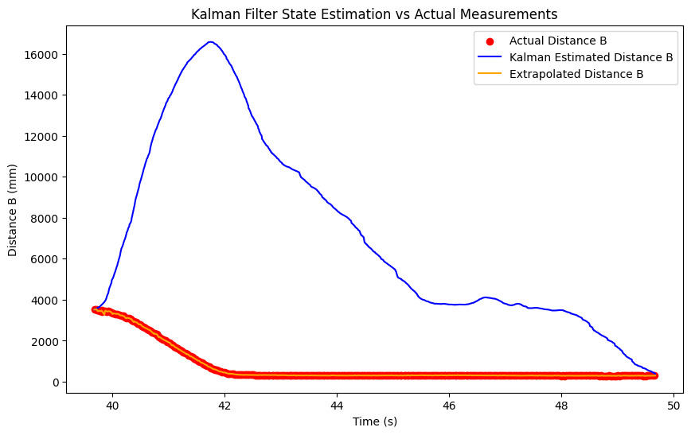

This Works Right?
Python Simulation
To test that our Kalman filter implementation is correct, we can simulate the system in Python and see if the state estimates align with the data we collected from the robot in lab 5. Using the code below, we can simulate the system and plot the results. Our initial state is \(\mu(0) = \begin{bmatrix} dist_0 \\ 0 \end{bmatrix}\) and \(\Sigma(0) = \begin{bmatrix} \sigma_x^2 & 0 \\ 0 & 1 \end{bmatrix}\). We use the measurement noise for the standard deviation of the position, and a small value for velocity since we are fairly certain that the robot starts at rest.
def kalman_filter_step(x_prev, P_prev, u, z):
# Prediction Step
x_pred = A_d @ x_prev + B_d.flatten() * u
P_pred = A_d @ P_prev @ A_d.T + Sigma_u
# Measurement Update Step
y = z - C @ x_pred
S = C @ P_pred @ C.T + Sigma_z
K = P_pred @ C.T @ np.linalg.inv(S) # Kalman Gain
x_updated = x_pred + K.flatten() * y
P_updated = (np.eye(len(P_prev)) - K @ C) @ P_pred
return x_updated, P_updated
The linearly extrapolated position already closely matches the data, which makes sense because we are looping at a very high frequency and get a measurement back about once every 3 loops. The kalman filter similarly very closely matches the data as well though, indicating that our implementation is correct and our parameters are sufficiently accurate to model the system well.
For a bit of experimentation, I also tried increasing the measurement noise to 100000 mm, and as expected, the Kalman filter solely relies more on the prediction and not on the measurements, resulting in an estimate that is wildly incorrect.
